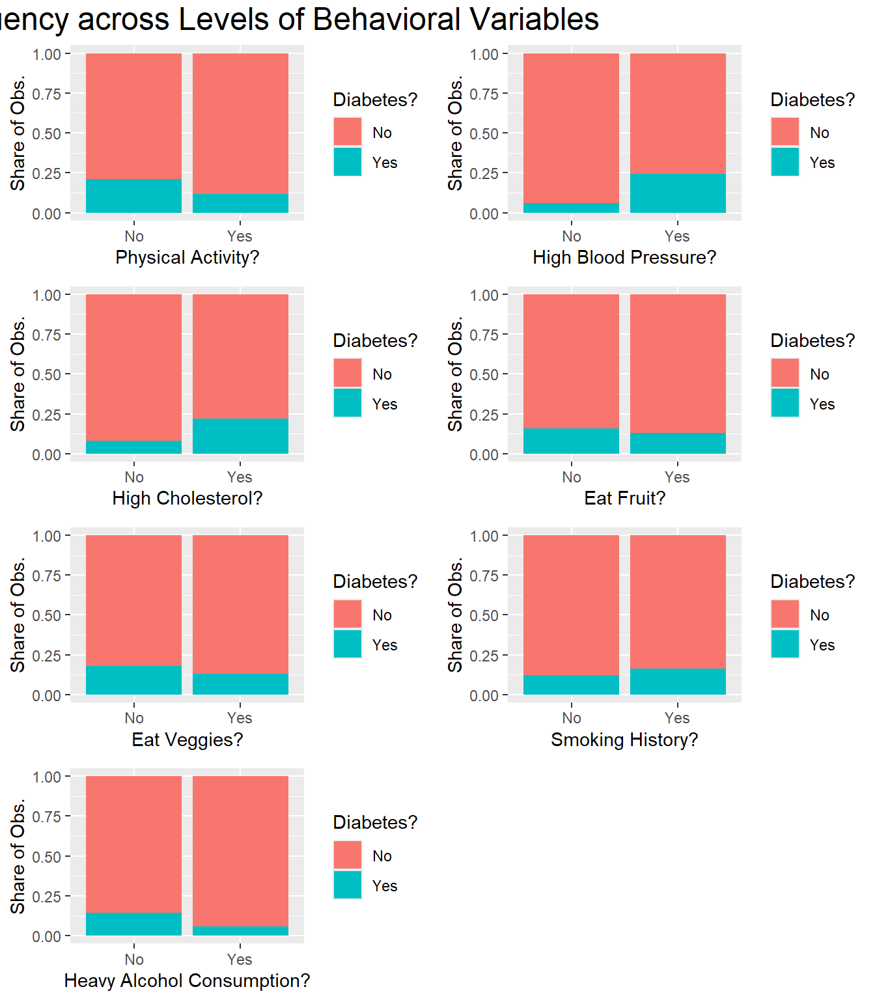
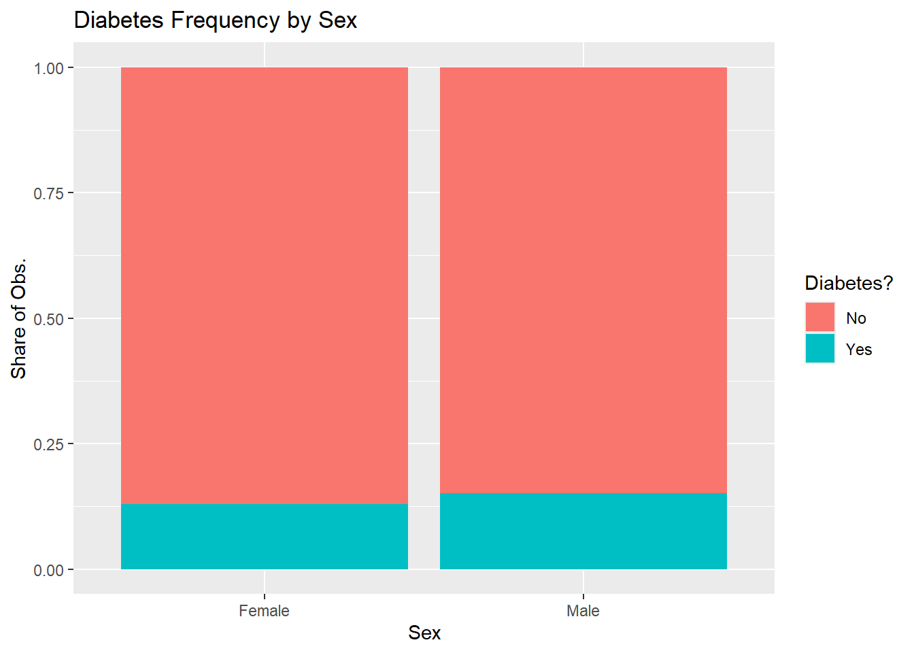
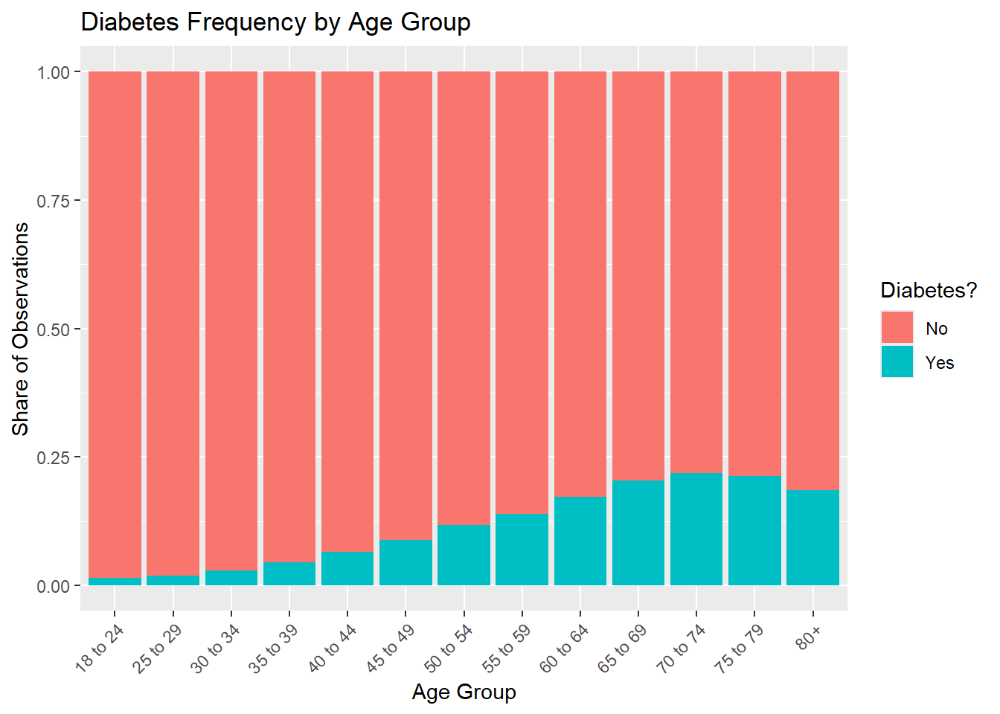
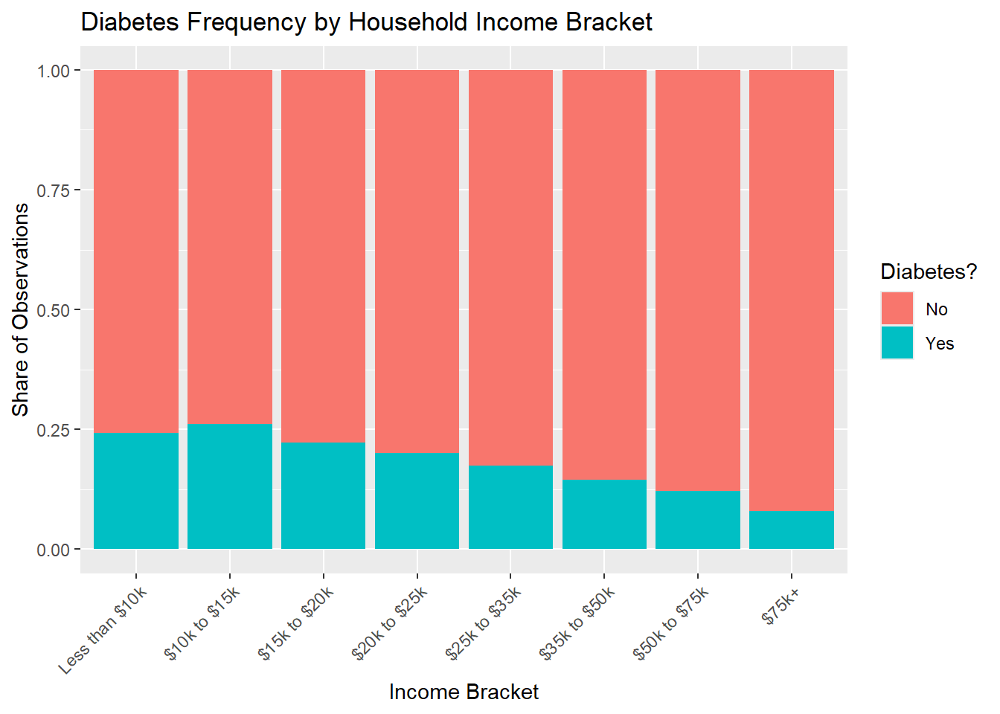
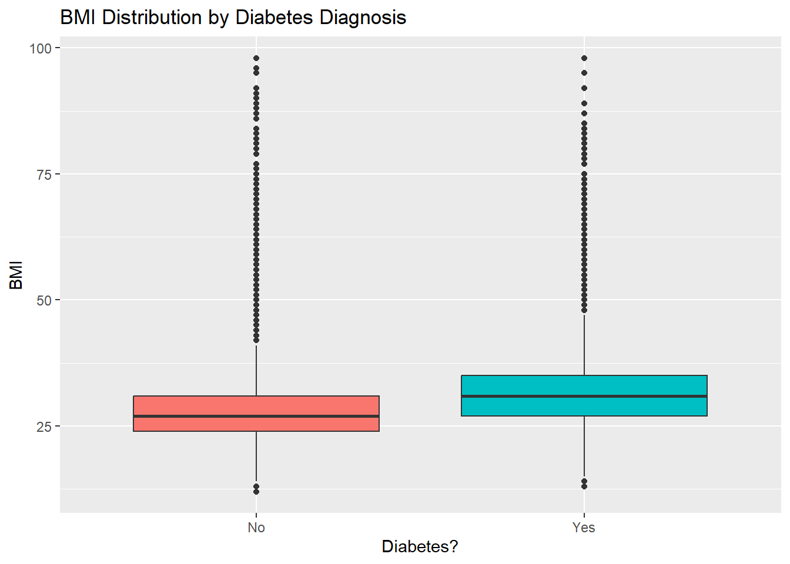

Diabetes is a challenging disease for those who suffer from it, and it is also difficult to diagnose. However, predictive machine learning models may be able to effectively predict when someone has diabetes or is at least at greater risk. The goal of this project is to use easily collected characteristics on individuals to tune a predictive model of diabetes incidence.
To develop this model, we will utilize the 2015 survey responses from the Behavioral Risk Factor Surveillance System (BRFSS), an annual telephone-based survey attempting to characterize the state of American health. While over 400,000 individuals were surveyed via telephone, we analyze a cleaned version of the dataset that contains 253,680 responses. This dataset is available via Kaggle
Our analysis will focus on the following variables, with cleaned and original variable names indicated:
diabetes_binary: Our response variable, a binary indicator for diabetes (original name: Diabetes_binary)
high_bp: A binary indicator for high blood pressure (original name: HighBP)
high_chol: A binary indicator for high cholesterol (original name: HighChol)
phys_activity: A binary indicator for whether the individual has exercised outside of work in the past 30 days (original name: PhysActivity)
fruits: A binary indicator for whether the individual consumes fruit at least once per day (original name: Fruits)
veggies: A binary indicator for whether the individual consumes vegetables at least once per day (original name: Veggies)
smoker: A binary indicator for whether the individual has smoked at least 100 cigarettes in their lifetime (original name: Smoker)
hvy_alc_consump: A binary indicator for whether the individual is considered a heavy drinker – 14 or more drinks per week for men and seven or more drinks per week for women (original name: HvyAlcoholConsump)
sex: A binary sex indicator – 0 for female and 1 for male (original name: Sex)
age: An age group indicator with 13 levels ranging from 18-24 to 80+ (original name: Age)
income: A household income income bracket indicator with 8 levels ranging from below $10,000 per year to over $75,000 per year (original name: Income)
This page documents our initial exploratory data analysis (EDA), including data validation steps and basic data summarization. Our summaries will be both univariate summary statistics and multi-variate summaries at each level of our response.
Loading Packages and Reading in Data
Before beginning the EDA, we need to load the required packages and read in the data.
#Loading packageslibrary(tidyverse)
Warning: package 'tidyverse' was built under R version 4.3.3
Warning: package 'tidyr' was built under R version 4.3.3
Warning: package 'purrr' was built under R version 4.3.3
Warning: package 'dplyr' was built under R version 4.3.3
Warning: package 'forcats' was built under R version 4.3.3
Warning: package 'lubridate' was built under R version 4.3.3
── Attaching core tidyverse packages ──────────────────────── tidyverse 2.0.0 ──
✔ dplyr 1.1.4 ✔ readr 2.1.5
✔ forcats 1.0.0 ✔ stringr 1.5.1
✔ ggplot2 4.0.0 ✔ tibble 3.2.1
✔ lubridate 1.9.3 ✔ tidyr 1.3.1
✔ purrr 1.0.4
── Conflicts ────────────────────────────────────────── tidyverse_conflicts() ──
✖ dplyr::filter() masks stats::filter()
✖ dplyr::lag() masks stats::lag()
ℹ Use the conflicted package (<http://conflicted.r-lib.org/>) to force all conflicts to become errors
library(grid)library(gridExtra)
Warning: package 'gridExtra' was built under R version 4.3.3
Attaching package: 'gridExtra'
The following object is masked from 'package:dplyr':
combine
When reading in the data, we will go ahead and subset the variables to only those we are interested in. Note that we have not yet cleaned the variable names. We will do so at the end of the next section.
#Initially reading in data and subsetting to variables of interestraw_data<-read_csv("diabetes_binary_health_indicators_BRFSS2015.csv") |>select(Diabetes_binary, HighBP, HighChol, PhysActivity, Fruits, Veggies, Smoker, HvyAlcoholConsump, Sex, Age, BMI, Income)
Rows: 253680 Columns: 22
── Column specification ────────────────────────────────────────────────────────
Delimiter: ","
dbl (22): Diabetes_binary, HighBP, HighChol, CholCheck, BMI, Smoker, Stroke,...
ℹ Use `spec()` to retrieve the full column specification for this data.
ℹ Specify the column types or set `show_col_types = FALSE` to quiet this message.
Data Cleaning
We need to complete a few data validation steps to determine whether the data need to be cleaned before any summaries and analysis. To start, we will count the number of missing values for each variable.
All of these variables except BMI should actually be factors, but they are stored as numeric variables. Let’s convert them to factors and give them informative labels. However, let’s first confirm the levels of these factors are what we expect.
#Printing unique values for the factor variablesapply(raw_data |>select(!BMI), MARGIN =2, unique)
These values are exactly as we expect: the first nine variables are binary. The Age variable is a multi-level factor ranging from a value of 1 for individuals between 18 and 24 to a value of 13 for those at least 80 years old. The Income variable is also a multi-level factor ranging from a value of 1 for individuals with household incomes below $10,000 to a value of 8 for individuals with household incomes above $75,000.
Now we need to ensure the BMI variable takes on reasonable values, which we can do by extracting the minimum and maximum within our sample.
#Capturing min and max of BMIraw_data |>summarize(across(BMI, list(min = min, max = max), .names ="{.col}_{.fn}"))
While a BMI of 98 is very high, it is still plausible. Thus, we can reasonably assume the BMI values are correct.
Thankfully, these data are very clean. We are now ready to convert all the variables except BMI to factors and assign appropriate labels. In doing so, let’s change all the variable names to the clean ones listed in the introduction.
#Converting most variables to factors (with labels) and updating namesdata<-raw_data |>#Converting yes-no variablesmutate(diabetes_binary =factor(Diabetes_binary, levels =0:1, labels =c("No", "Yes"))) |>mutate(high_bp =factor(HighBP, levels =0:1, labels =c("No", "Yes"))) |>mutate(high_chol =factor(HighChol, levels =0:1, labels =c("No", "Yes"))) |>mutate(phys_activity =factor(PhysActivity, levels =0:1, labels =c("No", "Yes"))) |>mutate(fruits =factor(Fruits, levels =0:1, labels =c("No", "Yes"))) |>mutate(veggies =factor(Veggies, levels =0:1, labels =c("No", "Yes"))) |>mutate(smoker =factor(Smoker, levels =0:1, labels =c("No", "Yes"))) |>mutate(hvy_alc_consump =factor(HvyAlcoholConsump, levels =0:1, labels =c("No", "Yes"))) |>#Converting sex to factormutate(sex =factor(Sex, levels =0:1, labels =c("Female", "Male"))) |>#Converting age to factormutate(age =factor(Age, levels =1:13, labels =c("18 to 24", "25 to 29","30 to 34", "35 to 39","40 to 44", "45 to 49","50 to 54", "55 to 59","60 to 64", "65 to 69","70 to 74", "75 to 79","80+"))) |>#Converting income to factormutate(income =factor(Income, levels =1:8, labels =c("Less than $10k", "$10k to $15k","$15k to $20k", "$20k to $25k","$25k to $35k", "$35k to $50k","$50k to $75k", "$75k+"))) |>#Renaming bmirename(bmi = BMI) |>#Dropping original "factor" variablesselect(!c(Diabetes_binary:Age, Income))#Printing structure of resultant datastr(data)
Note that when we print the data structure this time, each variable except bmi is a factor with interpretable labels.
Summaries
We are now ready to summarize our data. To begin, we will produce univariate numeric summaries. We will then produce visual summaries of the multivariate distributions of our response and each predictor.
Univariate Summaries
For our binary categorical variables other than sex, let’s produce a single table to compare the breakdown across yes and no.
#Generating basic counts for yes-no variablesdata |>#Subsetting to the variablesselect(!c(age, sex, bmi, income)) |>#Pivoting long for easier tabulationspivot_longer(cols =everything(), names_to ="variables", values_to ="values") |>#Grouping by variables and their levelsgroup_by(variables, values) |>#Counting by groupsummarize(count =n()) |>#Pivoting wide by values for cleanlinesspivot_wider(names_from = values, values_from = count)
`summarise()` has grouped output by 'variables'. You can override using the
`.groups` argument.
Looking at these univariate distributions, one key finding is that we have substantial class imbalance in our response variable. This is not particularly concerning given the large sample size, but it is something to be cognizant of if we prefer to over-predict rather than under-predict diabetes with our screener model.
Before we move to multi-variate distributions, let’s look at the univariate breakdowns for sex, age, and income, as well as some numeric summaries for bmi. We will start with sex.
#Generating observation counts by sexdata |>group_by(sex) |>summarize(count =n())
# A tibble: 2 × 2
sex count
<fct> <int>
1 Female 141974
2 Male 111706
It is notable that 56% of the observations correspond to females, compared to roughly 51% of the national population. It may have been the case that more of the male responses were culled when the person who created this dataset was cleaning the original response file.
Let’s move onto age.
#Generating counts by age groupdata |>group_by(age) |>summarize(count =n()) |>print(n =13)
# A tibble: 13 × 2
age count
<fct> <int>
1 18 to 24 5700
2 25 to 29 7598
3 30 to 34 11123
4 35 to 39 13823
5 40 to 44 16157
6 45 to 49 19819
7 50 to 54 26314
8 55 to 59 30832
9 60 to 64 33244
10 65 to 69 32194
11 70 to 74 23533
12 75 to 79 15980
13 80+ 17363
Given that the survey is meant to be representative of the broader US population, the general upward trend in responses with age is a bit concerning. Could this be because younger generations are harder to contact via phone?
Onto income!
#Generating counts by income bracketdata |>group_by(income) |>summarize(count =n())
# A tibble: 8 × 2
income count
<fct> <int>
1 Less than $10k 9811
2 $10k to $15k 11783
3 $15k to $20k 15994
4 $20k to $25k 20135
5 $25k to $35k 25883
6 $35k to $50k 36470
7 $50k to $75k 43219
8 $75k+ 90385
For household income, we see that the most common income group is $75,000+. Thus, these income groupings may not be particularly helpful for segmenting the population our sample represents, as we may be missing nuanced differences across income intervals above $75,000.
While we have already captured the minimum and maximum BMI values, we should explore a few other summary statistics for our lone numeric variable.
#Generating summary stats for bmidata |>summarize(across(bmi, list(mean = mean, median =median, sd = sd, IQR = IQR)))
Perhaps surprisingly, given that BMI is naturally bounded at the low end, the BMI values in our sample are not excessively skewed; the mean and median are relatively close together.
Multivariate Summaries
To start our multivariate analysis, let’s plot our response by each level of our yes-no variables. Given that we have already explored the unconditional distributions for these variables, we will use filled bar plots to focus specifically on the differences in diabetes rates across these conditional distributions.
#Generating response breakdown by phys_activityg1<-ggplot(data = data, aes(x = phys_activity, fill = diabetes_binary)) +geom_bar(position ="fill") +labs(x ="Physical Activity?", y ="Share of Obs.", fill ="Diabetes?")#Generating response breakdown by high_bpg2<-ggplot(data = data, aes(x = high_bp, fill = diabetes_binary)) +geom_bar(position ="fill") +labs(x ="High Blood Pressure?", y ="Share of Obs.", fill ="Diabetes?")#Generating response breakdown by high_cholg3<-ggplot(data = data, aes(x = high_chol, fill = diabetes_binary)) +geom_bar(position ="fill") +labs(x ="High Cholesterol?", y ="Share of Obs.", fill ="Diabetes?")#Generating response breakdown by fruitsg4<-ggplot(data = data, aes(x = fruits, fill = diabetes_binary)) +geom_bar(position ="fill") +labs(x ="Eat Fruit?", y ="Share of Obs.", fill ="Diabetes?")#Generating response breakdown by veggiesg5<-ggplot(data = data, aes(x = veggies, fill = diabetes_binary)) +geom_bar(position ="fill") +labs(x ="Eat Veggies?", y ="Share of Obs.", fill ="Diabetes?")#Generating response breakdown by smokerg6<-ggplot(data = data, aes(x = smoker, fill = diabetes_binary)) +geom_bar(position ="fill") +labs(x ="Smoking History?", y ="Share of Obs.", fill ="Diabetes?")#Generating response breakdown by hvy_alc_consumpg7<-ggplot(data = data, aes(x = hvy_alc_consump, fill = diabetes_binary)) +geom_bar(position ="fill") +labs(x ="Heavy Alcohol Consumption?", y ="Share of Obs.", fill ="Diabetes?")#Combining the seven plots in a single visualationsgrid.arrange(g1, g2, g3, g4, g5, g6, g7, ncol =2, top =textGrob("Diabetes Frequency across Levels of Behavioral and Health Indicator Variables", hjust =0.45, gp =gpar(fontsize =12)))

It seems that, unconditional on other variables, physical activity and heavy alcohol consumption are the behaviors most closely related to changes in diabetes frequency. Perhaps surprisingly, the diabetes rate is lower among individuals with relatively high alcohol consumption.
Diabetes rates are also much higher among those with high cholesterol and high blood pressure. These must be common co-morbidities for diabetes.
Let’s now explore any differences in diabetes frequency across sex to see whether this demographic characteristic explains diabetes incidence on its own.
#Generating response breakdown by sexggplot(data = data, aes(x = sex, fill = diabetes_binary)) +geom_bar(position ="fill") +labs(x ="Sex", y ="Share of Obs.", fill ="Diabetes?", title ="Diabetes Frequency by Sex")

It seems males in this dataset are slightly more likely to have diabetes.
Now let’s compare diabetes frequencies across age groups.
#Generating diabetes breakdown by age groupggplot(data = data, aes(x = age, fill = diabetes_binary)) +geom_bar(position ="fill") +labs(x ="Age Group", y ="Share of Observations", fill ="Diabetes?", title ="Diabetes Frequency by Age Group") +theme(axis.text.x =element_text(angle =45, vjust =1, hjust =1))

At least in our sample, diabetes rates increase with age until we reach the oldest age groups; the decline for older ages may reflect reduced life expectancy due to diabetes.
Could household income be a predictor of diabetes? If so, there could be important implications for health interventions.
#Generating diabetes breakdown by income bracketggplot(data = data, aes(x = income, fill = diabetes_binary)) +geom_bar(position ="fill") +labs(x ="Income Bracket", y ="Share of Observations", fill ="Diabetes?", title ="Diabetes Frequency by Household Income Bracket") +theme(axis.text.x =element_text(angle =45, vjust =1, hjust =1))

It seems diabetes risk declines as household income rises. This may indicate that access to less processed foods, which can be more expensive, reduces the risk of diabetes. However, it could also be the case the higher incomes correspond with increased access to early detection tools and preventative treatments.
For our final visuals summary, let’s produce BMI box plots for those with and without diabetes to see if the BMI distributions vary.
#bmi distributions by diabetes_binaryggplot(data = data, aes(x = diabetes_binary, y = bmi, fill = diabetes_binary)) +geom_boxplot() +labs(title ="BMI Distribution by Diabetes Diagnosis", y ="BMI", x ="Diabetes?") +theme(legend.position ="none")

It does seem that those with diabetes have higher BMIs on average, but these distributions almost completely overlap.
Wrap-Up
This concludes our exploratory data analysis. We will now attempt to predict whether or not an individual has diabetes using only the variables explored on this page. The documentation of the modeling process can be found here.